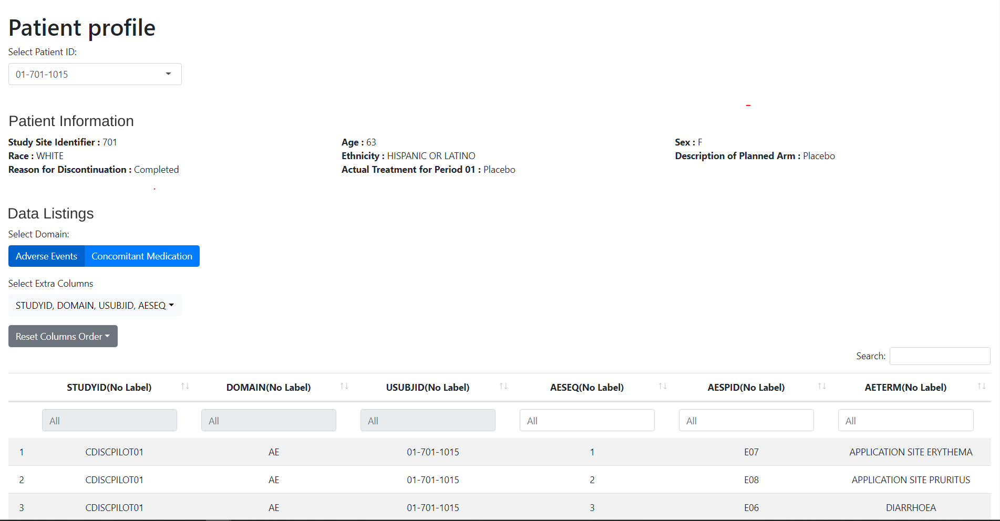

DaVinci’s dv.papo module shows patient information on a subject-level basis.
It can produce listings as well as a variety of plots. Those include events over time (adverse events, concomitant medications, …) or point-like events (lab values, vital sign measurements, …).
It is no limited to one data source, thus it can handle data from either ADAM, or SDTM.

Other DaVinci modules can direct mod_patient_profile to select and display information associated to any particular subject ID. When the Patient Profile is so instructed, it switches to the target subject ID and takes focus from the application, effectively jumping to a patient profile display as a result of a simple user interaction, such as a mouse click.
Installation
if (!require("remotes")) install.packages("remotes")
remotes::install_github("Boehringer-Ingelheim/dv.papo")Example
To use dv.papo inside a DaVinci app, add the module to your module list. The code below shows an example definition of a one-item module list. The setup of the plots parameter produces a plot showing Adverse Events.
See vignette("a00-papo") for further information on how to use dv.papo with dv.manager.
dataset_list <- list(
"demo" = dv.papo:::prep_safety_data(5),
"demo2" = dv.papo:::prep_safety_data(10)
)
module_list <- list(
"Patient Profile" = dv.papo::mod_patient_profile(
module_id = "papo",
subject_level_dataset_name = "adsl",
subjid_var = "USUBJID",
summary = list(
vars = c("SUBJID", "SITEID", "ARM", "TRTSDT", "TRTEDT", "AGE", "RACE", "SEX", "BMIBL"),
column_count = 3L
),
listings = list(
"Concomitant Medication" = list(
dataset = "cm"
),
"Adverse Events" = list(
dataset = "adae",
default_vars = c("ASTDT", "ASTDY", "AENDT", "AENDY", "AEDECOD", "AESEV")
)
),
plots = list(
timeline_info = c(trt_start_date = "TRTSDT", trt_end_date = "TRTEDT"),
range_plots = list(
"Adverse Events" = list(
dataset = "adae",
vars = c(
start_date = "ASTDT", end_date = "AENDT",
decode = "AEDECOD", grading = "AESEV", serious_ae = "AESER"
),
tooltip = c("AE Start Day: " = "ASTDY", "AE End Day: " = "AENDY")
)
),
value_plots = list(),
vline_vars = c("Informed Consent Date" = "RFICDT")
)
)
)
dv.manager::run_app(
data = dataset_list,
module_list = module_list,
filter_data = "adsl"
)